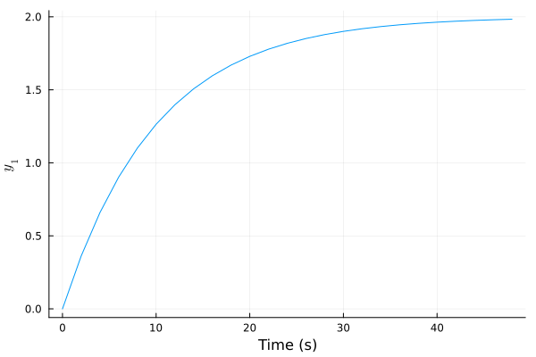
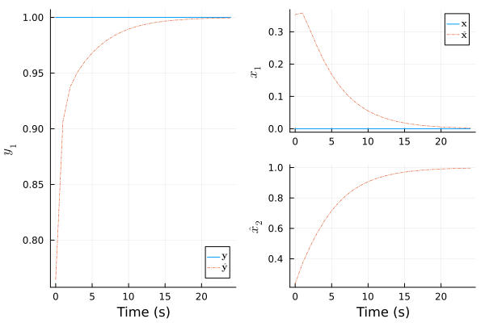
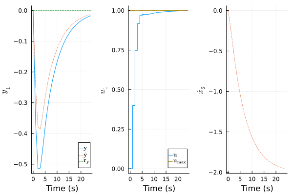

Functions: Simulations and Plots
This page documents the functions for quick plotting of open- and closed-loop simulations. They are generic to SimModel, StateEstimator and PredictiveController types. A SimResult instance must be created first with its constructor or by calling sim!. The results are then visualized with plot function from Plots.jl.
Quick Simulations
ModelPredictiveControl.sim! — Functionsim!(plant::SimModel, N::Int, u=plant.uop.+1, d=plant.dop; x_0=plant.xop) -> resOpen-loop simulation of plant for N time steps, default to unit bump test on all inputs.
The manipulated inputs $\mathbf{u}$ and measured disturbances $\mathbf{d}$ are held constant at u and d values, respectively. The plant initial state $\mathbf{x}(0)$ is specified by x_0 keyword arguments. The function returns SimResult instances that can be visualized by calling plot on them. Note that the method mutates plant internal states.
Examples
julia> plant = NonLinModel((x,u,d,_)->0.1x+u+d, (x,_,_)->2x, 5, 1, 1, 1, 1, solver=nothing);
julia> res = sim!(plant, 15, [0], [0], x_0=[1])
Simulation results of NonLinModel with 15 time steps.sim!(
estim::StateEstimator,
N::Int,
u = estim.model.uop .+ 1,
d = estim.model.dop;
<keyword arguments>
) -> resClosed-loop simulation of estim estimator for N steps, default to input bumps.
See Arguments for the available options. The noises are provided as standard deviations σ vectors. The simulated sensor and process noises of plant are specified by y_noise and x_noise arguments, respectively.
Arguments
estim::StateEstimator: state estimator to simulateN::Int: simulation length in time stepsu = estim.model.uop .+ 1: manipulated input $\mathbf{u}$ valued = estim.model.dop: plant measured disturbance $\mathbf{d}$ valueplant::SimModel = estim.model: simulated plant modelu_step = zeros(plant.nu): step load disturbance on plant inputs $\mathbf{u}$u_noise = zeros(plant.nu): gaussian load disturbance on plant inputs $\mathbf{u}$y_step = zeros(plant.ny): step disturbance on plant outputs $\mathbf{y}$y_noise = zeros(plant.ny): additive gaussian noise on plant outputs $\mathbf{y}$d_step = zeros(plant.nd): step on measured disturbances $\mathbf{d}$d_noise = zeros(plant.nd): additive gaussian noise on measured dist. $\mathbf{d}$x_noise = zeros(plant.nx): additive gaussian noise on plant states $\mathbf{x}$x_0 = plant.xop: plant initial state $\mathbf{x}(0)$x̂_0 = nothingorxhat_0: initial estimate $\mathbf{x̂}(0)$,initstate!is used ifnothinglastu = plant.uop: last plant input $\mathbf{u}$ for $\mathbf{x̂}$ initialization
Examples
julia> model = LinModel(tf(3, [30, 1]), 0.5);
julia> estim = KalmanFilter(model, σR=[0.5], σQ=[0.25], σQint_ym=[0.01], σPint_ym_0=[0.1]);
julia> res = sim!(estim, 50, [0], y_noise=[0.5], x_noise=[0.25], x_0=[-10], x̂_0=[0, 0])
Simulation results of KalmanFilter with 50 time steps.sim!(
mpc::PredictiveController,
N::Int,
ry = mpc.estim.model.yop .+ 1,
d = mpc.estim.model.dop,
ru = mpc.estim.model.uop;
<keyword arguments>
) -> resClosed-loop simulation of mpc controller for N steps, default to output setpoint bumps.
The output and manipulated input setpoints are held constant at ry and ru, respectively. The keyword arguments are identical to sim!(::StateEstimator, ::Int).
Examples
julia> model = LinModel([tf(3, [30, 1]); tf(2, [5, 1])], 4);
julia> mpc = setconstraint!(LinMPC(model, Mwt=[0, 1], Nwt=[0.01], Hp=30), ymin=[0, -Inf]);
julia> res = sim!(mpc, 25, [0, 0], y_noise=[0.1], y_step=[-10, 0])
Simulation results of LinMPC with 25 time steps.Simulation Results
ModelPredictiveControl.SimResult — TypeSimResult(obj::SimModel, U_data, Y_data, D_data=[]; <keyword arguments>)
SimResult(obj::StateEstimator, U_data, Y_data, D_data=[]; <keyword arguments>)
SimResult(obj::PredictiveController, U_data, Y_data, D_data=[]; <keyword arguments>)Manually construct a SimResult to quickly plot obj simulations.
Except for obj, all the arguments should be matrices of N columns, where N is the number of time steps. SimResult objects allow to quickly plot simulation results. Simply call plot on them.
Arguments
obj: simulatedSimModel/StateEstimator/PredictiveControllerU_data: manipulated inputsY_data: plant outputsD_data=[]: measured disturbancesX_data=nothing: plant statesX̂_data=nothingorXhat_data: estimated statesŶ_data=nothingorYhat_data: estimated outputsRy_data=nothing: plant output setpointsRu_data=nothing: manipulated input setpointsplant=get_model(obj): simulated plant model, default toobjinternal plant model
Examples
julia> model = LinModel(tf(1, [1, 1]), 1.0);
julia> N = 5; U_data = fill(1.0, 1, N); Y_data = zeros(1, N);
julia> for i=1:N; updatestate!(model, U_data[:, i]); Y_data[:, i] = model(); end; Y_data
1×5 Matrix{Float64}:
0.632121 0.864665 0.950213 0.981684 0.993262
julia> res = SimResult(model, U_data, Y_data)
Simulation results of LinModel with 5 time steps.Plotting Results
The plot methods are based on Plots.jl package. To install it run using Pkg; Pkg.add("Plots") in the Julia REPL.
ModelPredictiveControl.plot_recipe — Functionplot(res::SimResult{<:Real, <:SimModel}; <keyword arguments>)Plot the simulation results of a SimModel.
Arguments
The keyword arguments can be Bools, index ranges (2:4) or vectors ([1, 3]), to select the variables to plot.
res::SimResult{<:Real, <:SimModel}: simulation results to plotploty=true: plot plant outputs $\mathbf{y}$plotu=true: plot manipulated inputs $\mathbf{u}$plotd=true: plot measured disturbances $\mathbf{d}$ if applicableplotx=false: plot plant states $\mathbf{x}$
Examples
julia> res = sim!(LinModel(tf(2, [10, 1]), 2.0), 25);
julia> using Plots; plot(res, plotu=false)
plot(res::SimResult{<:Real, <:StateEstimator}; <keyword arguments>)Plot the simulation results of a StateEstimator.
Arguments
The keyword arguments can be Bools, index ranges (2:4) or vectors ([1, 3]), to select the variables to plot. Keywords in emphasis are non-Unicode alternatives.
res::SimResult{<:Real, <:StateEstimator}: simulation results to plotplotŷ=trueorplotyhat: plot estimated outputs $\mathbf{ŷ}$plotx̂=falseorplotxhat: plot estimated states $\mathbf{x̂}$plotxwithx̂=falseorplotxwithxhat: plot plant states $\mathbf{x}$ and estimated states $\mathbf{x̂}$ togetherplotx̂min=trueorplotxhatmin: plot estimated state lower bounds $\mathbf{x̂_{min}}$ if applicableplotx̂max=trueorplotxhatmax: plot estimated state upper bounds $\mathbf{x̂_{max}}$ if applicable<keyword arguments>ofplot(::SimResult{<:Real, <:SimModel})
Examples
julia> res = sim!(KalmanFilter(LinModel(tf(3, [2.0, 1]), 1.0)), 25, [0], y_step=[1]);
julia> using Plots; plot(res, plotu=false, plotŷ=true, plotxwithx̂=true)
plot(res::SimResult{<:Real, <:PredictiveController}; <keyword arguments>)Plot the simulation results of a PredictiveController.
Arguments
The keyword arguments can be Bools, index ranges (2:4) or vectors ([1, 3]), to select the variables to plot.
res::SimResult{<:Real, <:PredictiveController}: simulation results to plotplotry=true: plot plant output setpoints $\mathbf{r_y}$ if applicableplotymin=true: plot predicted output lower bounds $\mathbf{y_{min}}$ if applicableplotymax=true: plot predicted output upper bounds $\mathbf{y_{max}}$ if applicableplotru=true: plot manipulated input setpoints $\mathbf{r_u}$ if applicableplotumin=true: plot manipulated input lower bounds $\mathbf{u_{min}}$ if applicableplotumax=true: plot manipulated input upper bounds $\mathbf{u_{max}}$ if applicable<keyword arguments>ofplot(::SimResult{<:Real, <:SimModel})<keyword arguments>ofplot(::SimResult{<:Real, <:StateEstimator})
Examples
julia> model = LinModel(tf(2, [5.0, 1]), 1.0);
julia> res = sim!(setconstraint!(LinMPC(model), umax=[1.0]), 25, [0], u_step=[-1]);
julia> using Plots; plot(res, plotŷ=true, plotry=true, plotumax=true, plotx̂=[2])